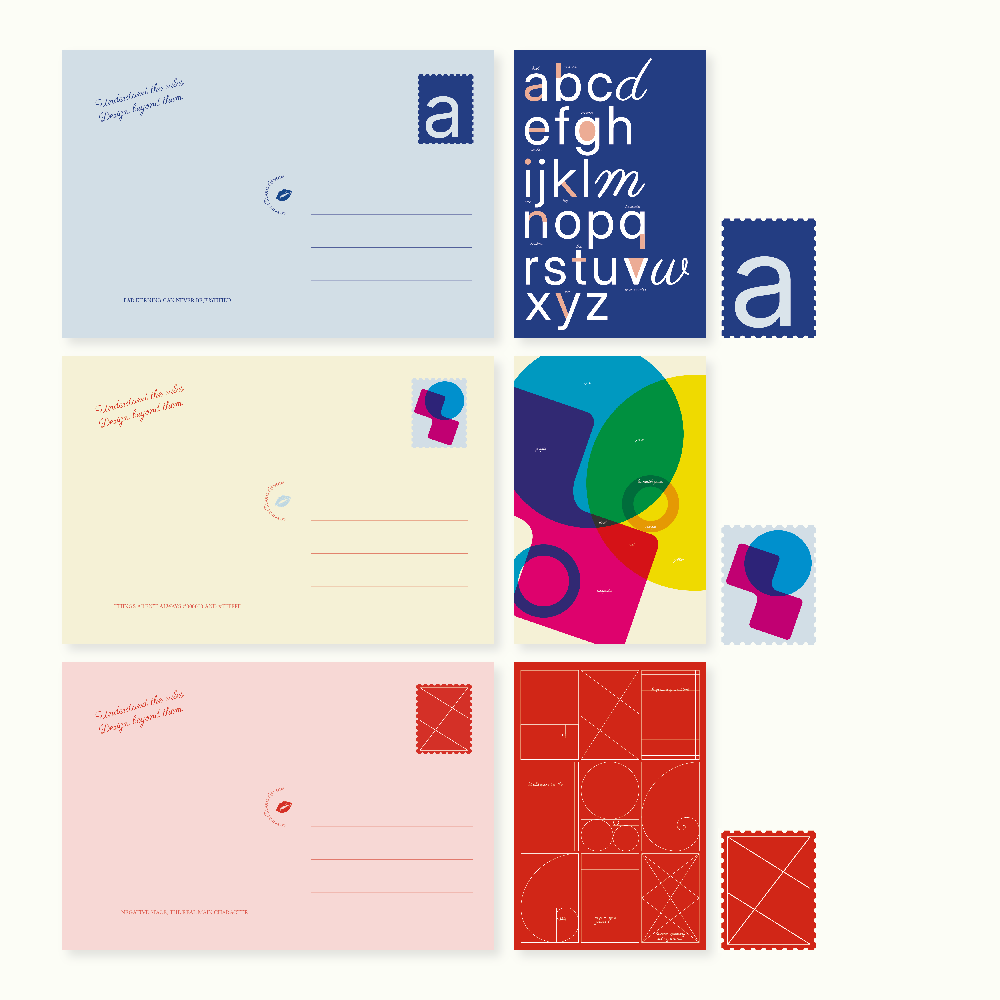

Creativity Through
Colour as emotion, type as expression, grid as structure — three parts of one system rather than three topics.
01
The premise
Colour, type and grid are usually taught as three separate subjects, each with its own list of rules. Learned that way, they read as constraints — things a designer has to get past in order to be creative.
The opposite is closer to the truth. Creative freedom comes from understanding structure well enough to know when to leave it. Creativity Through argues that design's foundations aren't limits but instruments: colour as emotion, type as expression, grid as structure — three parts of one system rather than three topics.
02
The thinking
An argument about coherence had to be proven by the work itself, not stated in a caption. So the series was built to demonstrate its own thesis twice over.
First, each poster is made of its subject. The type poster is built from letter anatomy — ascenders rising, descenders falling, counters and ligatures behaving as their definitions. The colour poster is the colour wheel dismantled into overlapping fields. The grid poster is a page of grid systems drawn as its own composition.
Second, the three share one typographic family, one modular grid and one evolving palette, so each stands alone but the set reads as a continuous composition when hung side by side. Same rules, three completely different results — which is the point.

03
The outcome
Three posters forming one visual language, with takeaway postcards that carry the system off the wall: each a portable fragment of its poster, sealed with its own stamp and a line that undercuts the seriousness — bad kerning can never be justified, negative space, the real main character.
Made for design students, educators and anyone who was taught the fundamentals as a set of prohibitions.


04
Going further
The next step would be a digital layer: a QR code on each poster opening the same composition, animated. Colours blending and reacting, letterforms morphing and responding, the grid assembling, breaking apart and reorganising itself.
Print can only ever show structure at rest. Motion would let the posters demonstrate the argument in real time — structure visibly enabling freedom rather than describing it — while running on the same typographic family, grid and palette, so the system stays coherent across both media.